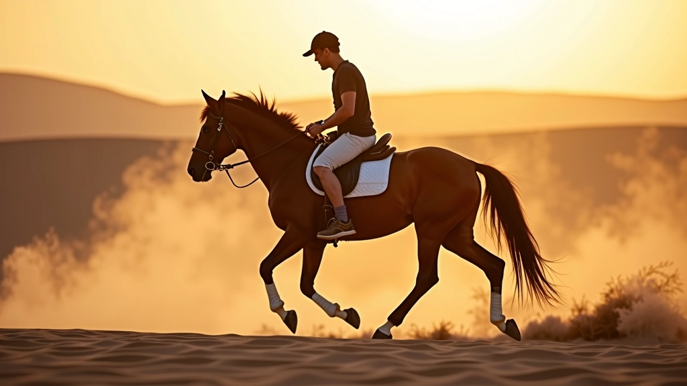
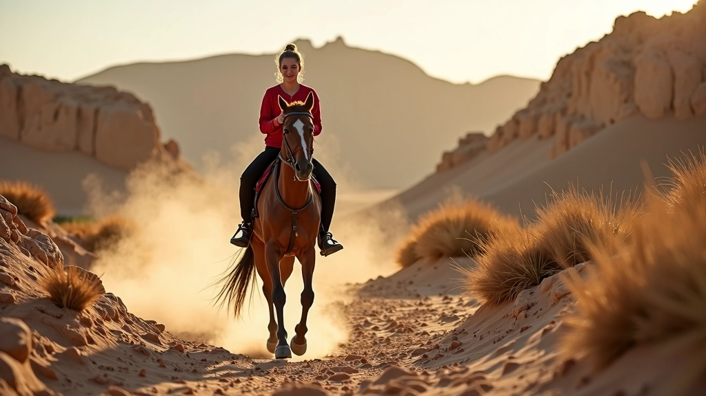
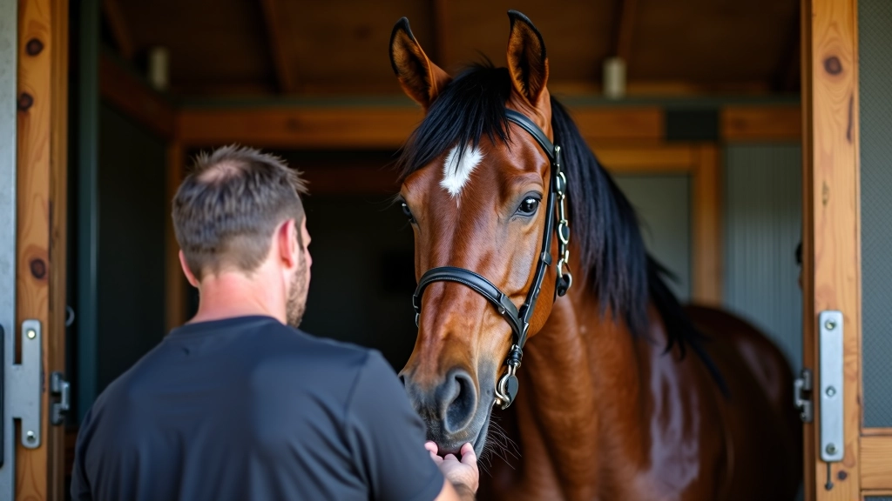
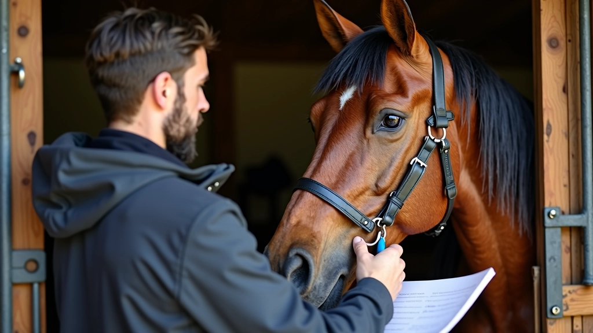

أعمالنا وإنجازاتنا
برامج تكييف متخصصة لخيل التحمل والمسارات الطويلة

برنامج تكييف التحمل المتقدم
برنامج شامل مدته 16 أسبوع يركز على بناء القدرة القلبية الرئوية والتحمل العضلي. يتضمن جلسات تدريب أسبوعية منتظمة، مراقبة تغذوية موازنة، وفحوصات صحية دورية لضمان سلامة الخيل وجاهزيته للسباقات الطويلة.
استفسر عن البرنامج
برنامج تكييف المسارات الأساسي
برنامج مدته 12 أسبوع موجه للخيل والفرسان الجدد. يركز على بناء الأساس البدني، تطوير التوازن على التضاريس المختلفة، والتأقلم مع المناخ الصحراوي. يتضمن جلسات عملية أسبوعية على مسارات متنوعة مع التركيز على المشي والهرولة المنظمة.
ابدأ برنامجك
برنامج الرعاية والاستشفاء المتخصص
برنامج متخصص في تسريع استشفاء الخيل بعد السباقات الشاقة. يجمع بين التدليك العلاجي، برامج راحة مرحلية مدروسة، ومتابعة بيطرية دورية. كل خيل يحصل على خطة استشفاء مخصصة تأخذ في الاعتبار مستوى الإرهاق والحالة الصحية العامة.
تواصل معنا
استشارات التغذية والإدارة الصحية
خدمة استشارية شاملة تغطي تقييم احتياجات التغذية، تصميم خطط غذائية موازنة، وإدارة الترطيب. نركز على توازن العناصر الغذائية حسب مستوى التدريب والمناخ الصحراوي المصري. تشمل المتابعة تقييمات دورية وتعديلات حسب تقدم البرنامج التدريبي.
احجز استشارةهل تريد تطوير خيلك؟
تواصل معنا لمعرفة المزيد عن برامجنا والبدء في رحلة التحضير المتخصصة لخيلك
تحدث معنا الآن